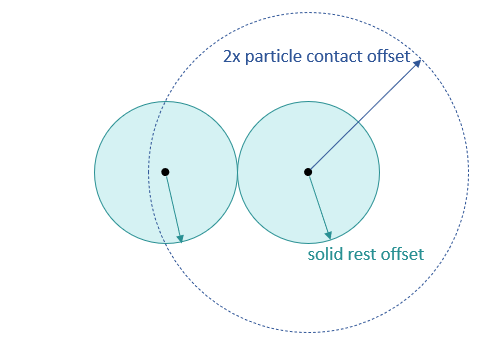
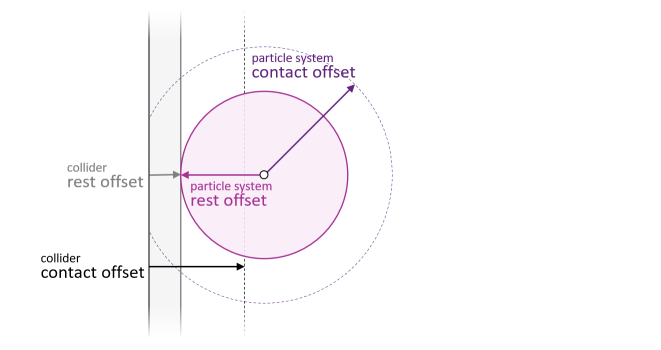

Particles#
ovphysx can simulate GPU-accelerated position-based-dynamics (PBD) particles for fluids and granular media such as sand. Particle sets interact with rigid bodies, articulations, and deformables.
What ovphysx supports for particles. You author the particle system and particle sets in USD, ovphysx simulates them, and you read the resulting particle positions and velocities back through the ovstage output read API (object type
PARTICLE_SET, attributespoints/velocities). There is no particle tensor-control API, and fluid render post-processing (isosurface, anisotropy, smoothing) and the Kit particle-sampler UI are out of scope for ovphysx.
Particles require GPU simulation. Enable GPU dynamics on the physics scene (
physxScene:enableGPUDynamics = true,physxScene:broadphaseType = "GPU") — refer to Physics Scene. CPU simulation of particles is not supported. The particle schema is not finalized and can change.
Simulation Components#
A particle simulation has three parts:
Particle sets — groups of particles backed by a
UsdGeom.PointsorUsdGeom.PointInstancerprim withPhysxParticleSetAPIapplied.A particle system (
PhysxParticleSystemprim) — holds simulation parameters shared by all its particle sets. Particle sets reference their system through thephysxParticle:particleSystemrelationship.A PBD particle material — bound to the particle system, provides additional shared parameters and density (refer to Mass and Density).
Multiple particle systems per stage are supported, but particles in different systems do not collide with each other.
Offsets#
The particle system’s offsets control interaction distances.
Particle-particle. Solid particle size is governed by the Solid Rest
Offset: two solid particles touch when their centers are 2 * solidRestOffset
apart. The Fluid Rest Offset is not a radius; combined with particle mass it
sets the fluid’s target (rest) density. Two particles are neighbors (and generate
solver constraints) when within 2 * particleContactOffset; the neighborhood
size is capped by maxNeighborhood (default 96). The following figure shows the
solid rest offset and the particle contact offset around two solid particles:

Particle-collider. Contacts are generated when a particle center is closer to a collider than the sum of the particle system’s and the collider’s Contact Offset, and contact occurs at the sum of their Rest Offsets (the solid rest offset does not apply here). The following figure shows the same two distances between a particle and a collider surface:

Autocomputation. By default the offsets are derived from
particleContactOffset (default 0.05 m, scaled to scene units), so adjust it to
change particle resolution:
Contact Offset =
1.0 * particleContactOffsetRest Offset =
0.99 * particleContactOffsetFluid Rest Offset =
0.99 * 0.6 * particleContactOffsetSolid Rest Offset =
0.99 * particleContactOffset
Mass and Density#
Particle mass is resolved with this precedence (lowest to highest):
default 1000 kg/m^3 < material density (scene) < material density (particle system) < mass-component density < mass-component mass
Bind a PBD particle material to the physics scene or the particle system to set
density, or apply a UsdPhysics.MassAPI (mass component) to a particle set to
override. When mass is set, each particle’s mass is mass / numParticles. When
density is set, per-particle mass is derived from the density and the rest-offset
volume (solid or fluid rest offset, as appropriate).
Reading Particle State#
ovphysx does not write particle results back to the stage. Read simulated
particle positions and velocities through the ovstage
output read API using the PARTICLE_SET object type
(points, velocities). Point-instancer-backed and points-backed sets are both
read this way.